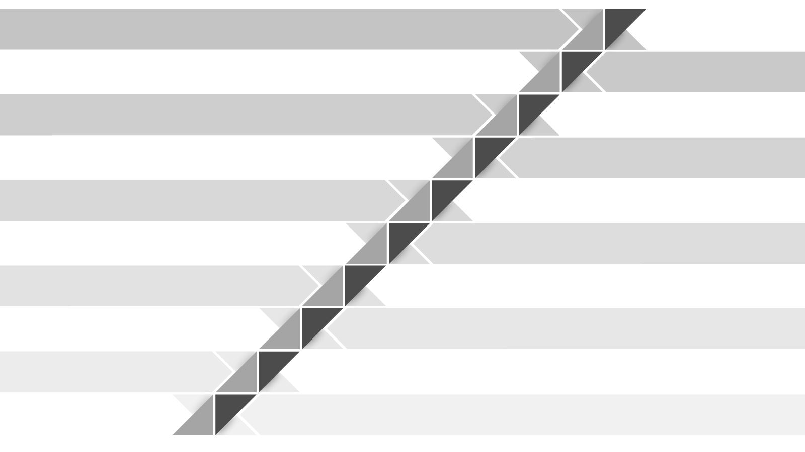
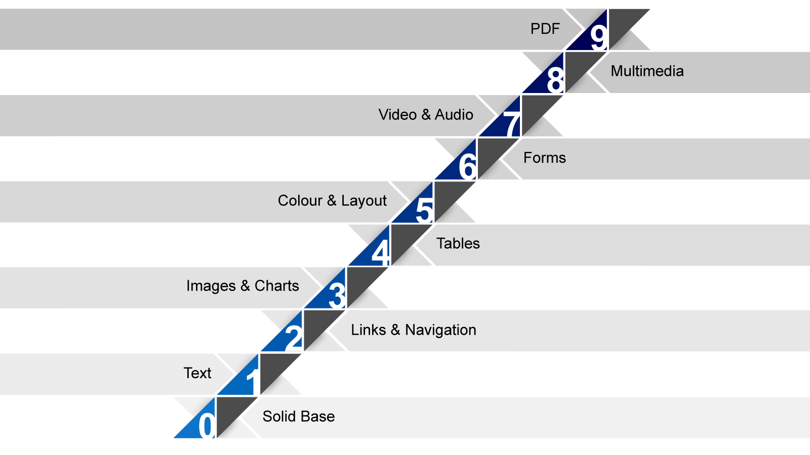

DELTS presents …
Taliesin L. Smith on
Making in 10 Steps or Less
March 11, 2014
Formalities
Taliesin L. Smith
On Twitter? Tweet your Questions
Nancy Beaton is Tweeting from @DELTS_Teach
Tweet your questions with #a11y (a-eleven-y)
Follow the conference with #openeducationwk
Make Comments on the OEW site
Accessibility
involves making allowances for characteristics a person cannot readily change.
(Clark 2003)
The world has changed
We used to make people take the backdoor.
We've started to add ramps and remove barriers.
In the digital realm, change is constant
The web is a diverse place
Users employ a diverse range of technological devices, including assistive & adaptive technologies , to access web content.
Refreshable braille device.
Kurzweil 3000 (Text to Speech software).
DIY smart phone stand. honigkiat.com
What kinds of stairs can web sites have?
What are the barriers that people with disabilities face on the web?

Content types & design choices
Each type of content, type of media and even a design choice can be a potential barrier on a website.
Web standards & best practices
Clearly this has to be a team effort .

Web Accessibility
Making sure that ramp gets built.
Web Accessibility is the inclusive practice of making websites usable by people of all abilities and disabilities.
Awareness Skills Resources Remember, team effort!
Let's get a move on
Sara Hendren, 2011. The Accessible Icon Project.
Perceivable
Operable
Understandable
Robust
(WCAG 2.0, 2008)
0. A solid base
Three essential things are needed for a solid (valid) code base . (Valid code is robust code).
Document Type
<!DOCTYPE html>
The doctype is your website's building code. Use a strict doctype and validate your pages.
A Page Title
<title>A Unique Page Title</title>
A unique title clearly tells the user where he/she is.
Character Encoding
<meta charset="UTF-8">
Ever see funny little symbols instead of letters and punctuation? It was likely having an encoding problem.
{demo}
1. Text: accessible by nature
To ensure text is accessible to all users:
Declare the human language
The browser needs to know what language the content is written in, and it needs to made aware of language changes.
<html lang="en">
<q lang="fr">Bonjour!</q>
Use meaningful document structure
Logical headings hierarchy, paragraphs, lists, quotations, emphasis, etc.
Natural linear order
A user should be able to read the content from top to bottom (depending the language, of course) with styles turned off.
Reading level
Keep it as simple as possible.
2. Links & Navigation
The stepping stones of the internet. Well-planned, consistent navigation benefits all users.
Skip to Content linksSpecial links (often hidden) that provide a direct route to the main sections or landmarks.
HTML5 has a robust set of new landmark tags.
Keep navigation consistent
All users love consistency.
Use meaningful words to distinguish links
Clear function: avoid generic read more or click here statements.
User control: no forced new tabs.
{demo skip-to-content}
3. Images & Charts
A text-based alternative to all meaningful visual content is required.
Short descriptions
<img src="image-file.jpg" alt="Description." >
Short descriptions can go in:
alt attribute (hidden to visual user)
caption (figcaption in html5)
content (visible to everyone)
Complex images
May need longer descriptions than is appropriate for the alt attribute.
Link to a supplementary description.
Maintain the meaning of the document.
4. Tables
Use the rich set of semantic table mark-up that is available.
Keep tables simple
Simple tables benefit all users.
Caption your tables
<caption>Introduce the table here.</caption>
Table captions are associated directly with the table and give a visually impaired user a brief description of the data and the layout.
Scope out direction
<th scope="row">Describe the table here.</th>
Use the scope attribute to give the row or column content direction.
Tabular data only
Use CSS for layout.
{demo tables}
5. Colour & Layout
Accessible colour and layout choices need to be agreed upon at the beginning of project.
Choose Colours Wisely
Use CSS for Layout
Using CSS & HTML together properly gives you the biggest bang in making your content accessible.
{demo css zen garden}
6. Forms: complex by nature
Keep things simple. Don't ask for data you don't need.
Label all form controls
Associate a label to every form control.
Keep form elements organized
Forms have a rich set of tags: legend, fieldset, optgroup. Grouping like controls together creates organization and meaning.
Note: Inaccessible forms & complex data tables have been the basis for lawsuits.
{no demo}
7. Video & Audio
No auto play.
Like images, video & audio need text alternatives to be made accessible. This can be achieved through:
Accessible Transcripts {demo video}
Captions (closed or open)
Audio description (aka video description)
Subtitles for language accessibility
AccessForEveryone on YouTube
Sample audio description
8. Multimedia
Interactive web components such games and learning exercises are more complex .
Follow web standards.
Graceful degradation.
Test.
Providing equivalent alternatives.
9. PDF
PDF has its own standard.
Must be tagged to be accessible.
Can it be converted? Is it feasible?
Accessibility is a design tool
[...] organizations need to look at accessibility as a design tool and not simply as list of requirements with which they must comply.
-Derek Featherstone, 2013
Accessible design benefits everyone
14% of Canadians self-identify as having a disability.
(2006 Canadian Census)
55% [of American cell phone owners] use their phone to go online… 31% of [these] current cell internet users say that they mostly go online using their cell phone .
(2012 Pew Research)
Special Thanks
A very special thanks to Andrea Quigley for the lovely new graphics.
Ann Marie Pickup & Nancy Beaton for helping with questions.
Resources